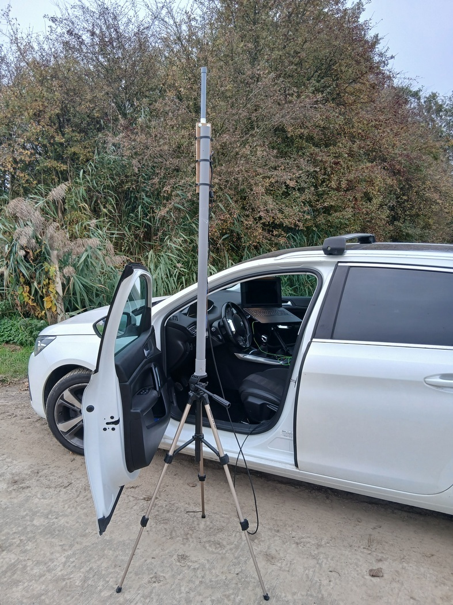

Domaine 3 PENTESTING Wi-Fi : Tests Externes
Qu’est-ce que le pentesting Wi-Fi - (version « tests externes »)

Le pentesting (test d’intrusion) est une simulation contrôlée d’attaque réalisée pour évaluer la sécurité d’un système. L’idée n’est pas de « pirater » pour nuire, mais de détecter et prouver les faiblesses avant que de vrais acteurs malveillants ne les exploitent.
Que teste-t-on exactement ?
Les tests externes Wi-Fi ciblent la résilience du réseau sans fil face à des perturbations et manipulations des trames radio (les paquets qui font fonctionner le Wi-Fi). Les actions typiques que l’on peut simuler sont par exemple :
I) Déauthentification (deauth)
La déauthentification est une technique qui force un appareil Wi-Fi (smartphone, caméra, PC…) à se déconnecter de son point d’accès. Quand elle est utilisée malicieusement, elle peut rendre un équipement inaccessible même si tout paraît normal côté box.
Imaginez une caméra de surveillance connectée en Wi-Fi. Une attaque de déauth peut :
- Couper l’accès à la caméra : l’image et le flux vidéo ne sont plus accessibles depuis l’application ou l’enregistreur.
- Faire manquer des événements : vols, intrusions, incidents ne sont pas enregistrés ni vus en temps réel.
- Empêcher la preuve : en cas d’incident, il peut manquer des séquences vidéo nécessaires pour les enquêtes ou l’assurance.
- Créer une fausse impression de sécurité : les responsables pensent que tout fonctionne alors que l’observabilité est compromise.
- Épuiser la batterie / ressources : la caméra peut tenter continuellement de se reconnecter, augmentant la consommation et le wear-and-tear.
- Ouverture à d’autres attaques : pendant les désynchronisations, un attaquant peut tenter d’installer un point d’accès malveillant (rogue AP) ou exploiter le moment de reconnexion pour des attaques d’interception.
- Perte de surveillance et réactions retardées (sécurité physique compromise).
- Risque financier (vol, vandalisme non détecté) et administratif (problèmes avec assurances).
- Atteinte à la réputation pour les lieux publics ou commerces.
- Risque d’exfiltration ou d’escalade si l’attaque est une étape vers une intrusion plus large.